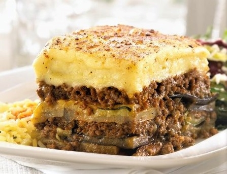
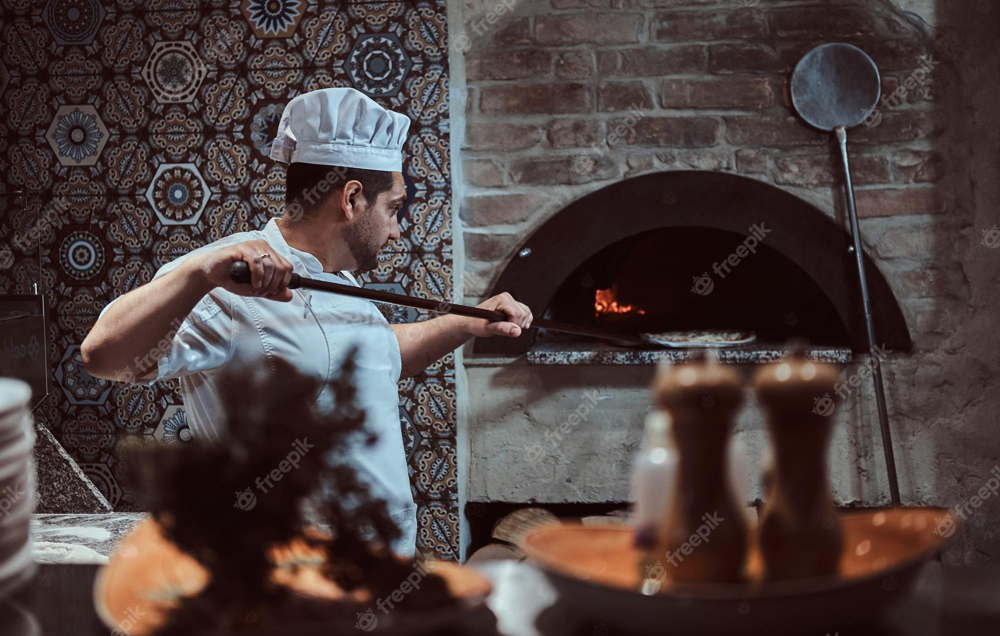

our Menu

At our esteemed restaurant, we take pride in offering a diverse and tantalizing menu that brings together the rich flavors of Greek, Turkish, and Italian cuisines. Prepare yourself for an unforgettable gastronomic adventure as our culinary experts artfully blend the best of these three culinary traditions.
Indulge in the vibrant and zesty flavors of Greece, where you can savor traditional Greek dishes such as moussaka, souvlaki, and spanakopita. Delight in the aromatic spices and succulent kebabs of Turkey, with specialties like doner kebab, shish kebab, and lahmacun. Immerse yourself in the comforting and authentic tastes of Italy, with mouthwatering pastas, wood-fired pizzas, and classic dishes like lasagna and risotto.
Our carefully curated menu ensures that each dish embodies the true essence of its respective cuisine, prepared with the finest ingredients and expert culinary techniques. Whether you are craving the tangy and fresh flavors of the Mediterranean or the warm and comforting notes of Italian cuisine, our restaurant offers a delightful selection that will satisfy even the most discerning palates.
Book A Table

Our Book Table is an invitation to explore the diverse tapestry of Mediterranean cuisine. Each dish tells its own story, weaving together the history, traditions, and tastes of these remarkable cultures. Whether you're a seasoned adventurer or a culinary enthusiast, our restaurant offers a literary feast that will transport your senses and leave you longing for more.
So, grab a seat at our renowned restaurant and let us take you on a culinary journey like no other. From the shores of Greece to the bustling streets of Istanbul and the picturesque landscapes of Italy, our menu brings together the best of these three remarkable cuisines, inviting you to savor every delicious chapter.
Opening Hours

Welcome to our restaurant, where the flavors of Greece, Turkey, and Italy come together in a harmonious culinary symphony. We are delighted to serve you exquisite dishes that showcase the best of these remarkable cuisines.
Tuesday - Thursday: 12:30pm - 2:30pm & 6pm - 8pm
Friday & Saturday: 12:30pm - 2:30pm & 6pm - 9pm
Please note that we are closed on Mondays, a day dedicated to preparing for the week ahead and giving our valued staff a well-deserved break. We believe that this ensures we can consistently deliver the highest level of quality and service on the remaining days.